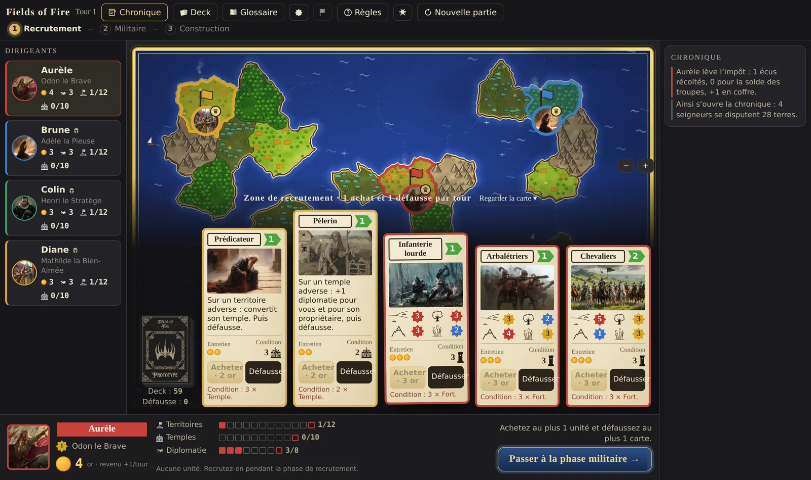
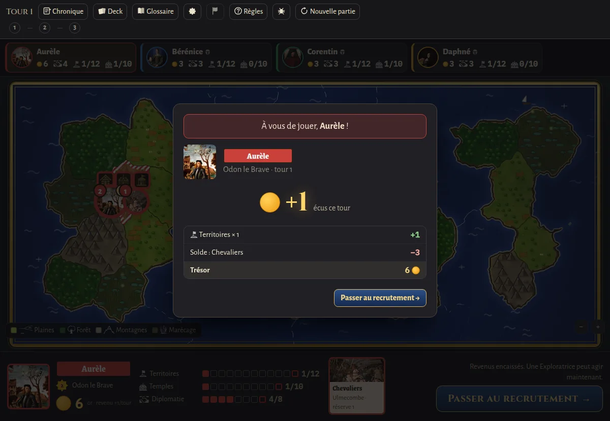
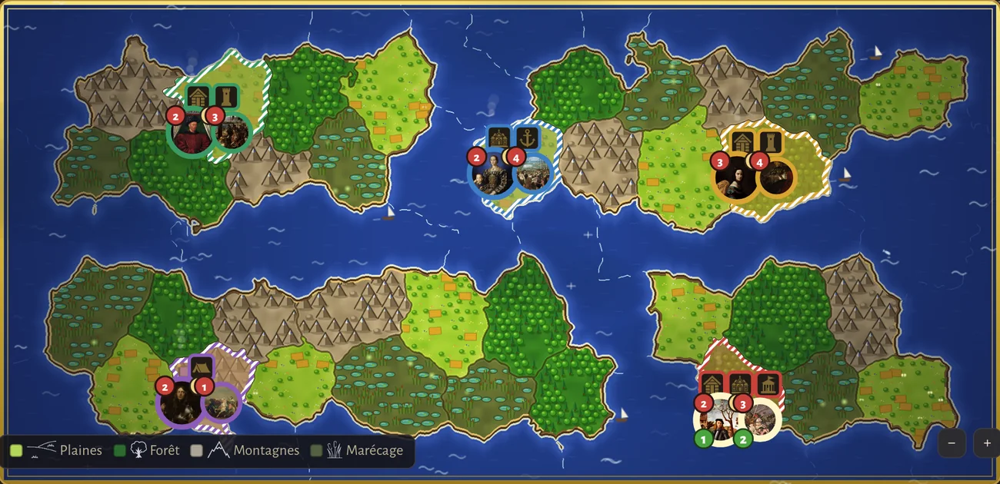
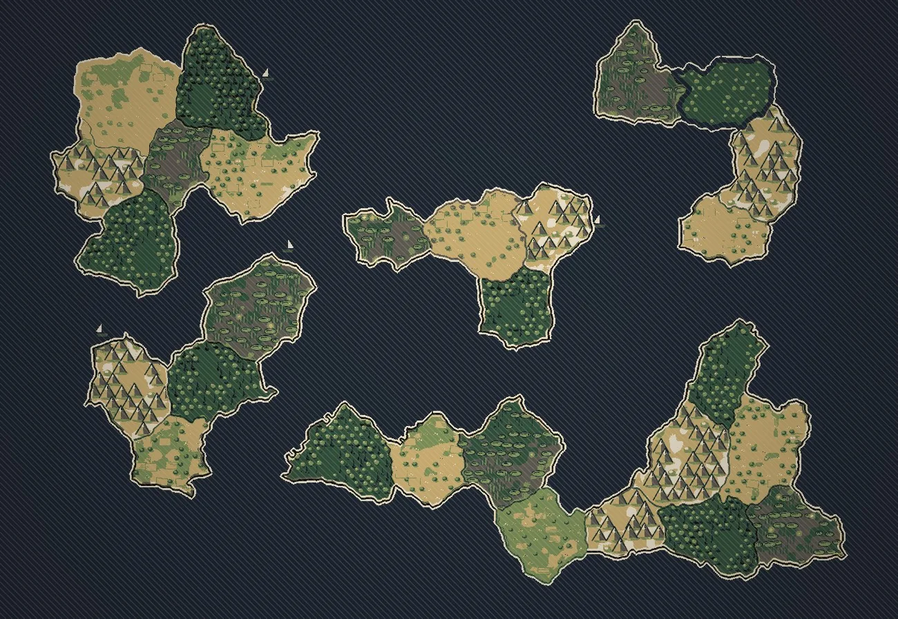
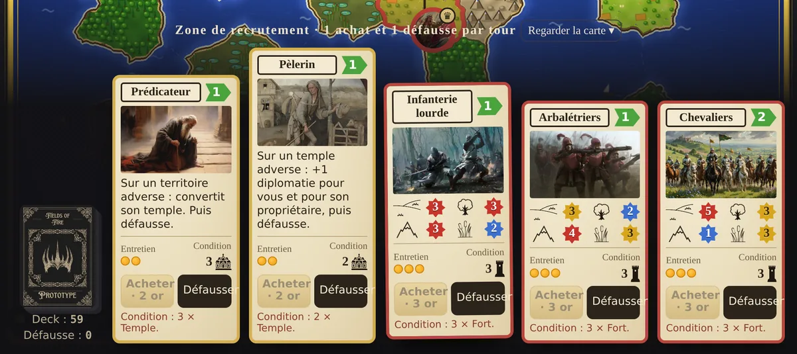
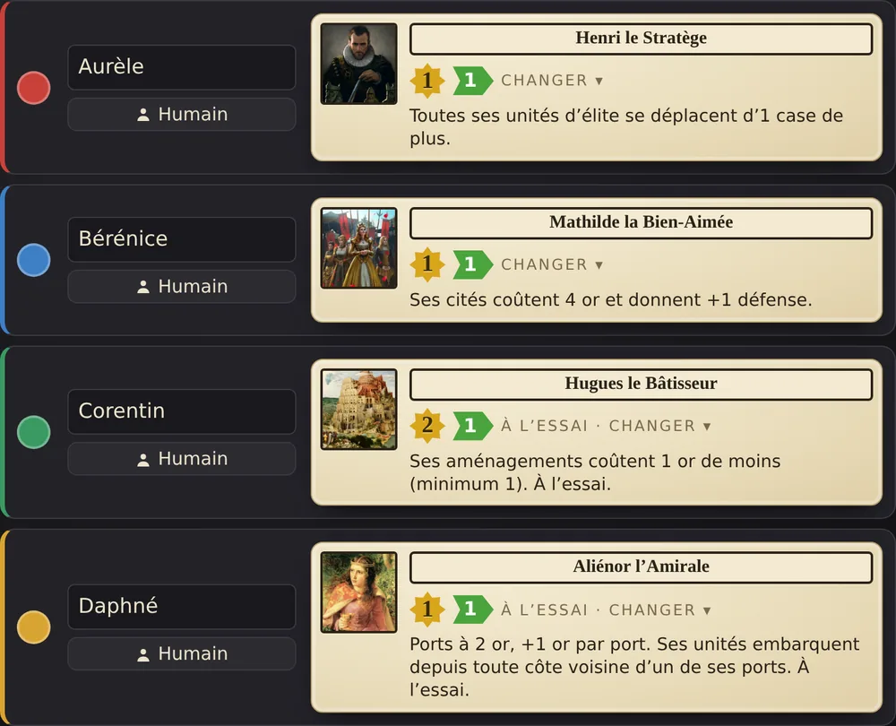

Take the land
Hold enough territories, capital included. Every assault costs diplomacy, except against a Tyrant — conquest isolates you as much as it enlarges you.
The sword, the faith or diplomacy. Three ways to win, one game to choose.
01 — The game
Each player takes a lord and starts from a capital on an archipelago drawn afresh every game. You raise taxes, recruit, manoeuvre and build. Attacking costs diplomacy; building costs gold; and everyone watches whoever is closing in on their own victory condition.

A four-lord game, running in the browser.
02 — Roads to victory
All three are open to everyone from turn one, and their thresholds rise with the player count. Nothing forces an early choice: many games turn on the moment someone switches.
Hold enough territories, capital included. Every assault costs diplomacy, except against a Tyrant — conquest isolates you as much as it enlarges you.
Build enough temples, foreign soil included, or gain them by conversion and cession. A temple costs 7 gold, and razing one is never free.
Reach the diplomacy threshold by playing envoys, ceding land and keeping the peace. An Embassy in your capital amplifies every gain, as long as no one attacks you.
| Road | 3 players | 4 | 5 | 6 |
|---|---|---|---|---|
| Military · territories | 11 | 12 | 13 | 14 |
| Religious · temples | 9 | 10 | 11 | 12 |
| Diplomatic · points | 7 | 8 | 9 | 10 |
These numbers are still moving: they are tuned playtest after playtest.
03 — The turn
1 gold per territory, 1 more per city, minus your units’ upkeep. The breakdown is shown line by line.
Five cards sit face up. You may buy one and discard one, in whichever order you like.
Move your pieces, claim a neutral territory, or attack — at the price of one diplomacy point.
Camp, fort, port, city, temple, embassy. Two buildings per tile, and as many builds as your gold allows.
04 — The map
The map is drawn anew for each game: seven territories per player, four terrains — plains, forest, mountains, marsh — and sea zones parting the continents. Terrain matters: every elite unit has a different strength depending on where it fights.

Wider seas — a checkbox before the game starts. The open water spreads and the sea zones multiply: ports, coasters and admirals start to matter more than land borders.
Sea zones cannot be walked across. You need a port, or one of the units that takes to the water without one. A well-read archipelago is worth an army: you choose your neighbours, and you choose the ones you will never see coming.


05 — The units
Five cards face up, one buy and one discard per turn. Elite units fight — their strength shifts with the terrain. Special units never fight: they convert a temple, carry word to a foreign court, scout the map or shore up a defence. Every card requires a building before it can be recruited, and draws upkeep at each collection.

The recruitment row, with deck and discard on the left.
06 — The lords
Your lord is a piece like any other: it moves, it claims, it can lead an assault and lose a territory doing so. Its power, though, shapes the whole game.
Each of his elite units in an assault gives him +1, whether or not he leads it.
His camps, forts and ports gain +1 defence. His cities cost 6 gold.
Once per game, in peacetime: 4 gold for 1 diplomacy point.
Her first city costs 4 gold; the rest are full price.
Her temples cost 6 gold and give +1 defence.
All his elite units move one tile further.
His camps, forts and ports cost 1 gold less.
Her ports cost 2 gold.

Choosing lords, before starting a local game.
07 — Diplomacy and tyranny
Diplomacy is not only a road to victory, it is the currency of war. Every attack costs a point, including retaking land that was taken from you. Ceding a territory willingly earns one. So does an envoy sent to a foreign capital.
Out of diplomacy, a player who still wants to attack must become a Tyrant. They gain the right to strike without counting the cost.
A Tyrant never gains diplomacy again: the diplomatic road is shut for the rest of the game. Only the sword and the faith remain.
Attacking a Tyrant costs nobody anything. Nor does razing their temples. Every turn one of their lands revolts — and that one will never take them back.
08 — Play
The prototype runs entirely in the page: nothing to install, no account to create. Games are recorded anonymously — length, rounds, lords, victory type — purely to balance the game.
A game set aside can be paused for 48 hours, then resumed with the same code.
09 — Playtests
Fields of Fire is a prototype: rules shift from one week to the next, cards are on trial, thresholds are measured game after game. What helps us most: a card that strikes you as too strong or useless, a lord that feels unplayable, and how many were around the table.